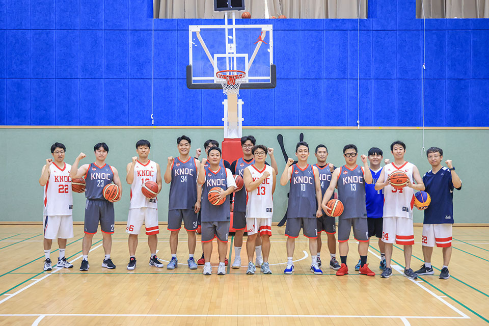
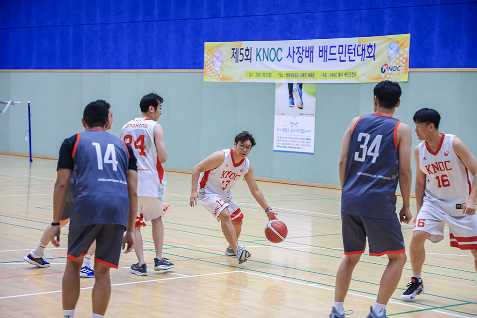

공사 내에서 역사가 20년이 넘은 동아리를 찾기는 쉽지 않다. 그중 농구동아리 바운스는 2005년 창단되어 지금까지 공사 메이저급 동아리로 명맥을 이어 나가고 있다. 농구공이 바닥에 닿아 튕겨 오르는 물리적인 움직임을 가리키는 ‘BOUNCE’. 오늘도 농구 코트에서 바운스한 열정의 바이브를 보여주고 있는 농구동아리, 바운스를 직접 만났다.

2025년 9월, 공사 농구동아리 ‘바운스’ 단체사진열정과 우정으로 하나 된 바운스
“누구 하나 손에 꼽을 수 없을 정도로 농구부 모든 멤버를 자랑하고
싶습니다. 이제 노쇠화가 되어서 운동이 버겁기는 하지만, 농구에 대한
열정은 나이에 상관없이 다들 넘친다고 생각합니다.”
가장 실력이 좋은 멤버를 묻자, 농구동아리의 살림을 맡고 있는 총무,
김동현 과장(글로벌기술센터)은 이렇게 대답했다. 2011년 입사 때부터
이어온 동아리 내 선후배와의 끈끈한 우정이 느껴지는 대목이었다.
바운스의 눈부신 활약을 가능하게 한 최적의 환경
공사의 농구동아리 바운스는 본사가 울산으로 이전해오기 전부터
꾸준히 활약해왔다. 2012년 Jumpball리그, 2013년 YMCA 직장인리그에서
수많은 직장동호회를 물리치고 2부리그 우승을 했을 정도로 선수들의
실력이 무척 좋았으며, 울산으로 내려온 이후, 2016년 울산시 협회장배
직장부 챌린져스리그에서도 준우승을 차지하며 바운스의 우수한 실력을
뽐낸 바 있다.
울산으로 이전한 이후에는 직장인리그가 활성화되지 않아 주로 인근
회사 동호회와 교류전 위주로 활동하고 있으며, 매주 수요일 퇴근 후
자체 연습경기 및 울산시 직장인/동호회팀과 교류전을 갖거나
점심시간을 활용해 본사 체육관에서 짧게 연습경기를 진행하고 있다.
동아리 회장을 맡고 있는 심호성 차장(미주유럽사업처)은, 본사 체육관
시설에 큰 만족감을 드러냈다. “자체 실내 체육관을 가지고 있으며,
전동으로 높이가 조절되고 샷클락이 카운트되는 농구 골대를 구비하고
있어, 대한민국 직장 중에 농구를 할 수 있는 최상의 물리적
환경이라고 생각합니다.”라며, 농구동아리가 활성화될 수 있었던
비결을 소개했다.
화려함과 박진감 그리고 팀워크, 이 모든 것이 농구의 매력
농구동아리가 소개하는 농구의 매력은 과연 무엇일까. 그것은 바로, 개인 기량의 화려함, 빠른 템포의 속도와 박진감, 팀워크에 의한 시너지라고 한다. 또한, 농구는 건강한 신체와 농구에 대한 열정만 있다면 누구나 함께 할 수 있고, 장비가 필요 없는 매우 경제적인 운동이라는 큰 장점도 어필했다.

마지막은 농구동아리가 전하는 메시지. “저희 농구동아리 바운스는 공사의 우수한 농구 시설을 바탕으로 공사 임직원들의 단합을 위하여 2015~2019년 동안 매년 처실별 농구대회를 개최하였습니다. 모든 동호회원이 참여하여 대회 준비, 진행, 경기 평가 등 현업과 별개로 많은 역할을 수행하기 때문에 힘든 행사지만, 공사 임직원의 높은 만족도를 바탕으로 공사 최고의 동호회라는 자긍심을 가지고 있습니다. 코로나 이후 처실별 농구대회가 잠시 중단된 상황인데, 공사의 모든 직원을 하나로 만들 수 있는 처실별 농구대회가 다시 재개되기를 바라는 직원분들이 계신다면 고려해보겠습니다. 신규 부원으로 입단을 원하시는 분은 언제든 연락해 주시기 바랍니다. 많은 관심과 참여 부탁드립니다.”